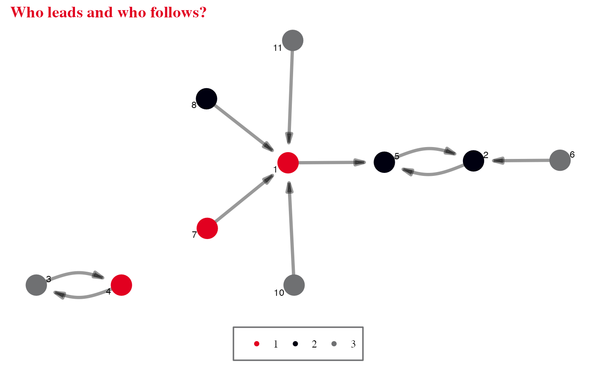

These functions enable graphs to be easily and quickly themed, e.g. changing the default colour of the graph's vertices and edges.
set_manynet_theme(theme = "default")
theme_iheid(base_size = 12, base_family = "serif")
theme_ethz(base_size = 12, base_family = "sans")
theme_uzh(base_size = 12, base_family = "sans")
theme_rug(base_size = 12, base_family = "mono")to_mentoring(ison_brandes) %>%
mutate(color = c(rep(c(1,2,3), 3), 3)) %>%
graphr(node_color = "color") +
labs(title = "Who leads and who follows?") +
scale_color_iheid() +
theme_iheid()
#> Scale for colour is already present.
#> Adding another scale for colour, which will replace the existing scale.
